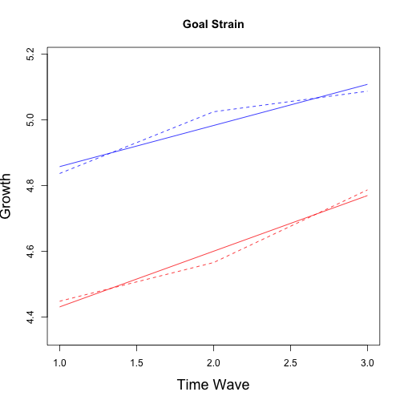
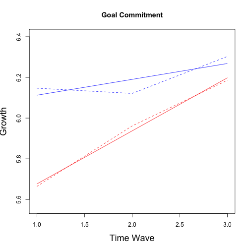
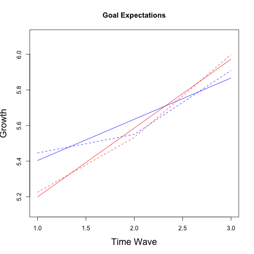
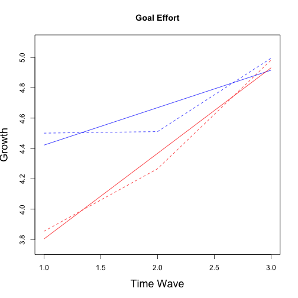
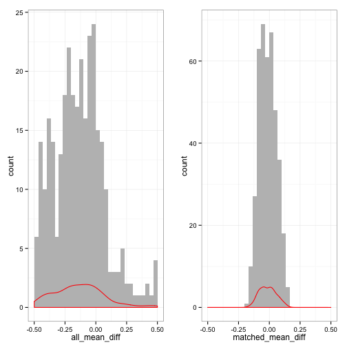
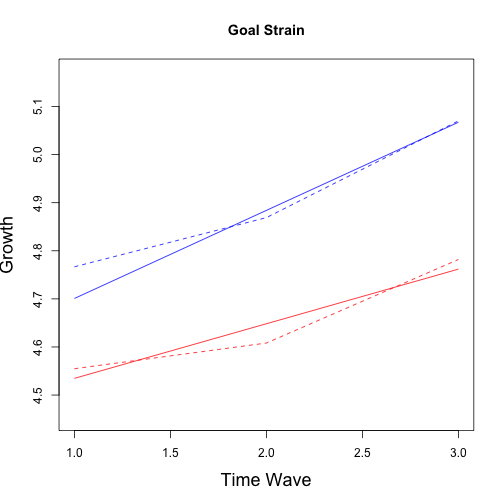
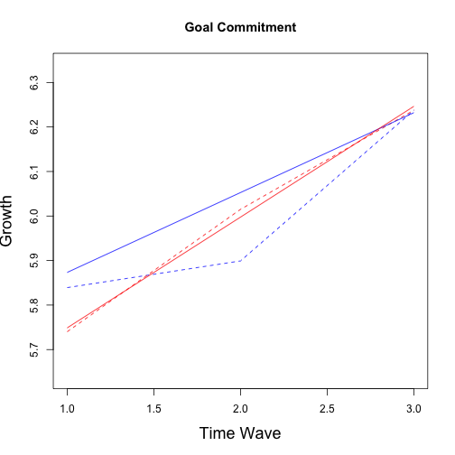
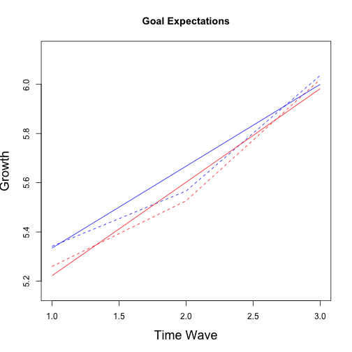
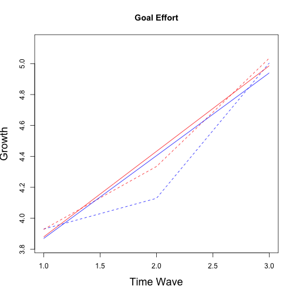

Presented below are the following out puts:
## Matching Variables:
## [1] "id"
## [2] "bsukup6: sex"
## [3] "bsyntvu7: Birth year"
## [4] "bkoulu8: School at 2nd measurement"
## [5] "bka10: Estimate what was your last years grade average (theoretical subjects)"
## [6] "bdeci35: because someone else wants it or the situation requires it"
## [7] "bdeci36: because I would feel shame, guilt or distress for not fulfilling it"
## [8] "Have you done some of the matriculation tests?"
## [9] "btut104: How important is this goal?"
## [10] "but105: How committed are you to this educational goal?"
## [11] "but106:How probable would you say it is that this educational goal will come true?"
## [12] "btut107: How able do you think you are to fulfil your educational goal?"
## [13] "btut108 Even that the fulfilment of this educational goal would acquire a lot of work, I am going to do everything needed for it."
## [14] "btut109: What ever happens I am not going to give up on this educational goal"
## [15] "bitsetun: Self-esteem MEAN (bitse127,bkits128,bitse129,bkits130,bitse131)"
## [16] "buup_pit: Burnout, long, MEAN (buupum85-94)"
## [17] "bdepres: Depression, MEAN (bdeps132-141)"
## [18] "belama: Satisfaction with life, MEAN (belam165-169)"
## [19] "boppvai: learning disabilities, MEAN (boppvai81,boppvai82,boppvai83)"
## [20] "bluoamai: classified mother's occupation"
## [21] "bluoamis: classified father's occupation"
## Pre-existing differences on matching variables:
## Group Diff (SD Units) t_value Significance
## T1importance 0.40390 3.0497 *
## T1commitment 0.57685 4.5987 *
## T1progress 0.34598 2.8926 *
## T1time 0.53336 4.8363 *
## T1tiring 0.14113 1.1737
## T1cometrue 0.12254 0.9474
## T1fulfilgoal 0.28776 2.2282 *
## T1workongoal 0.41724 3.6385 *
## T1stress 0.32875 2.6645 *
## bsukup6 -0.82196 -7.0608 *
## bsyntvu7 0.32301 2.6007 *
## bluoamai -0.22598 -1.7624
## bluoamis 0.06475 0.5344
## bdeci35 0.05183 0.4424
## bdeci36 0.05922 0.4986
## bitsetun -0.04371 -0.3752
## buup_pit -0.06885 -0.5842
## bdepres 0.02886 0.2527
## belama 0.19640 1.7049
## boppvai -0.13996 -1.2505
## btut104 0.62508 5.1884 *
## btut105 0.71244 6.2023 *
## btut106 0.34952 3.1573 *
## btut107 0.23635 1.9697 *
## btut108 0.59124 4.9664 *
## btut109 0.54712 5.0093 *
## byo95 0.23042 1.8812
## bka10 0.41424 3.5774 *
To account for missing data five imputation datasets were created using the Amelia II package. A graphical representation of missingness is provided below. As can be seen, while attrition was present it was relatively minor in most cases.
#{r missingData, fig.width=7, fig.height=6, message=FALSE, warning=FALSE, echo=FALSE, cache=FALSE}
set.seed(104)
library(Amelia)
MI <- amelia(data2Goals, m = 5, idvars=c("id", "bkou102b", "id.1" , "bk102a_1",
"bk102a_8","bkoulu8", "CKES40_1",
"dkes36a"),
noms=c("bsukup6", "byo95"),
ords = c("bsyntvu7", "dtil37b", "CK37_2")
)
missmap(MI)
save(MI, file="/Users/phparker/Dropbox/Databases/FinnishData/MI.RData")
rm(MI)
## Missing datapercentage:
## -----------------------------
## id T1importance T1commitment T1progress T1time
## 0.000 0.008 0.008 0.008 0.008
## T1tiring T1cometrue T1fulfilgoal T1workongoal T1stress
## 0.010 0.008 0.008 0.010 0.008
## bk102a_1 bk102a_8 bkou102b T2importance T2commitment
## 0.000 0.000 0.000 0.391 0.391
## T2progress T2time T2tiring T2cometrue T2fulfilgoal
## 0.394 0.391 0.391 0.394 0.396
## T2workongoal T2stress id.1 T3importance T3commitment
## 0.391 0.391 0.354 0.409 0.412
## T3progress T3time T3tiring T3cometrue T3fulfilgoal
## 0.551 0.412 0.409 0.409 0.409
## T3workongoal T3stress group bkoulu8 bsukup6
## 0.409 0.409 0.000 0.000 0.000
## bsyntvu7 bluoamai bluoamis bdeci35 bdeci36
## 0.000 0.039 0.073 0.008 0.008
## bitsetun buup_pit bdepres belama boppvai
## 0.003 0.008 0.000 0.008 0.003
## btut104 btut105 btut106 btut107 btut108
## 0.000 0.000 0.000 0.000 0.000
## btut109 byo95 CK37_2 CKES40_1 dtil37b
## 0.000 0.003 0.000 0.769 0.604
## dkes36a bka10 sch1 sch2 sch3
## 0.404 0.013 0.000 0.000 0.000
## sch4 sch5
## 0.000 0.000
Scale Score and Pooling Models
Scale scores for the goal cognitions and behaviours were constructed after imputation. For full script, including the pooling functions please contact lead author.
library(abind)
dataMIimp <- imputationList(MI$imputations)
# Chi-square tables for unmatched status attainment
cat("First year post univeristy\n============================\n")
## First year post univeristy
## ============================
st1a <- abind(with(dataMIimp, table(CK37_2, group)))
st1b <- with(dataMIimp, chisq.test(CK37_2, group, simulate.p.value = TRUE))
resStat <- as.matrix(cbind(apply(st1a[, c(T, F)], 1, mean), apply(st1a[, c(F,
T)], 1, mean)))
dimnames(resStat) <- list(c("Not Entered", "Entered"), c("Gap", "Direct"))
cat("Univeristy enrolment\n------------------\n")
## Univeristy enrolment
## ------------------
resStat
## Gap Direct
## Not Entered 196 102
## Entered 81 2
resStat <- matrix(rowMeans(sapply(st1b, function(x) x$stdres)), 2, 2)
dimnames(resStat) <- list(c("Not Entered", "Entered"), c("Gap", "Direct"))
cat("Std. residuals: Cell\n------------------\n")
## Std. residuals: Cell
## ------------------
resStat
## Gap Direct
## Not Entered -5.755 5.755
## Entered 5.755 -5.755
cat("p-value: ", mean(sapply(st1b, function(x) x$p.value)))
## p-value: 0.0004998
cat("Second year post univeristy\n===========================\n")
## Second year post univeristy
## ===========================
st1a <- abind(with(dataMIimp, table(dtil37b, group)))
st1b <- with(dataMIimp, chisq.test(dtil37b, group, simulate.p.value = TRUE))
resStat <- as.matrix(cbind(apply(st1a[, c(T, F)], 1, mean), apply(st1a[, c(F,
T)], 1, mean)))
dimnames(resStat) <- list(c("Not Entered", "Entered"), c("Gap", "Direct"))
cat("Univeristy enrolment\n------------------\n")
## Univeristy enrolment
## ------------------
resStat
## Gap Direct
## Not Entered 50.4 24.6
## Entered 226.6 79.4
resStat <- matrix(rowMeans(sapply(st1b, function(x) x$stdres)), 2, 2)
dimnames(resStat) <- list(c("Not Entered", "Entered"), c("Gap", "Direct"))
cat("Std. residuals: Cell\n------------------\n")
## Std. residuals: Cell
## ------------------
resStat
## Gap Direct
## Not Entered -1.193 1.193
## Entered 1.193 -1.193
cat("p-value: ", mean(sapply(st1b, function(x) x$p.value)))
## p-value: 0.3453
Growth curve models are fitted using the lmer package and pooled estimated and t-values given by the mitools package. Fitting of these models was the same for all outcomes of interest but the script is given for goal strain below as an illustration. Results for all models follow.
# models
goal.strain <- lapply(MI$imputations, function(x) StackFun("goal.strain", x))
goal.strain <- imputationList(goal.strain)
# Intercept only
M0 <- with(data = goal.strain, lmer(goal.strain ~ group + (1 | id)))
M0_b <- colMeans(do.call(rbind, MIextract(M0, fun = fixef)))
M0_r <- with(data = goal.strain, lmer(I(goal.strain - M0_b[1]) ~ 0 + offset(M0_b[2] *
group) + (1 | id)))
# Linear
M1 <- with(data = goal.strain, lmer(goal.strain ~ wave + group + wave:group +
(wave | id)))
M1_b <- colMeans(do.call(rbind, MIextract(M1, fun = fixef)))
M1_r <- with(data = goal.strain, lmer(I(goal.strain - M1_b[1]) ~ 0 + offset(M1_b[2] *
wave) + offset(M1_b[3] * group) + offset(M1_b[4] * I(group * wave)) + (1 +
wave | id)))
# Quadratic
M2 <- with(data = goal.strain, lmer(goal.strain ~ wave + group + wave:group +
I(wave^2) + group:I(wave^2) + (wave | id)))
M2_b <- colMeans(do.call(rbind, MIextract(M2, fun = fixef)))
M2_r <- with(data = goal.strain, lmer(I(goal.strain - M2_b[1]) ~ 0 + offset(M2_b[2] *
wave) + offset(M2_b[3] * group) + offset(M2_b[5] * I(group * wave)) + offset(M2_b[4] *
I(wave * wave)) + offset(M2_b[6] * I(group * wave * wave)) + (1 + wave |
id)))
# Compare Models
chi_b <- sapply(1:5, function(x) anova(M0[[x]], M1[[x]], M2[[x]])[2:3, c("Chisq")])
chi_r <- sapply(1:5, function(x) anova(M0_r[[x]], M1_r[[x]], M2_r[[x]])[2:3,
c("Chisq")])
cat("No growth vs. Linear\nchi:", mean(chi_r[1, ]), "; df:4; p-value:", Fit_Fun(chi_b[1,
], chi_r[1, ], M = 5, df = 4))
## No growth vs. Linear
## chi: 19.75 ; df:4; p-value: 0.004477
cat("Linear vs. Quadratic\nchi:", mean(chi_r[2, ]), "; df:2; p-value:", Fit_Fun(chi_b[2,
], chi_r[2, ], M = 5, df = 2))
## Linear vs. Quadratic
## chi: 0.9845 ; df:2; p-value: 0.6983
# Parameter Estimates
M_summary <- F_Model_Par(M1)
summary(M_summary)
## Multiple imputation results:
## MIcombine.default(betas, vars2)
## results se (lower upper) missInfo
## (Intercept) 4.7326 0.13166 4.472813 4.99237 16 %
## wave 0.1251 0.05795 0.008215 0.24203 34 %
## group -0.4709 0.28078 -1.038188 0.09629 35 %
## wave:group 0.0442 0.13449 -0.243616 0.33202 58 %
### Plots observed Mean and trend######
MGS1 <- sapply(MI$imputations, function(x) apply(x[x$group == 0, grep("strain$",
names(x))], 2, mean, na.rm = TRUE))
MGS1 <- rowMeans(MGS1)
MGS2 <- sapply(MI$imputations, function(x) apply(x[x$group == 1, grep("strain$",
names(x))], 2, mean, na.rm = TRUE))
MGS2 <- rowMeans(MGS2)
# Observed Trend
plot(1:3, MGS1, type = "l", lty = 2, col = "blue", ylab = "Growth", xlab = "Years Since Graduation",
main = "Goal Strain", ylim = c(min(c(MGS1, MGS2)) - 0.1, max(c(MGS1, MGS2)) +
0.1))
points(1:3, MGS2, col = "red", type = "l", lty = 2)
# Fitted Trend
pars <- M_summary$coef
fgs1 <- function(x) {
pars[1] + (pars[2] * x)
}
curve(fgs1, 1, 3, col = "blue", add = TRUE)
fgs2 <- function(x) {
(pars[1] + pars[3]) + (pars[2] * x + pars[4] * x)
}
curve(fgs2, 1, 3, col = "red", add = TRUE)

## No growth vs. Linear
## chi: 59.92 ; df:4; p-value: 1.552e-06
## Linear vs. Quadratic
## chi: 6.088 ; df:2; p-value: 0.2028
## Multiple imputation results:
## MIcombine.default(betas, vars2)
## results se (lower upper) missInfo
## (Intercept) 6.03460 0.09383 5.84323 6.2260 40 %
## wave 0.07789 0.04633 -0.02147 0.1773 59 %
## group -0.61878 0.15985 -0.93557 -0.3020 21 %
## wave:group 0.18281 0.08015 0.01643 0.3492 48 %

## No growth vs. Linear
## chi: 81.5 ; df:4; p-value: 2.116e-09
## Linear vs. Quadratic
## chi: 4.825 ; df:2; p-value: 0.2802
## Multiple imputation results:
## MIcombine.default(betas, vars2)
## results se (lower upper) missInfo
## (Intercept) 5.1720 0.10583 4.96071 5.38321 27 %
## wave 0.2317 0.05163 0.12365 0.33974 51 %
## group -0.3594 0.21390 -0.79222 0.07347 36 %
## wave:group 0.1550 0.11342 -0.09319 0.40322 65 %

## No growth vs. Linear
## chi: 80.04 ; df:4; p-value: 2.706e-10
## Linear vs. Quadratic
## chi: 9.963 ; df:2; p-value: 0.08415
## Multiple imputation results:
## MIcombine.default(betas, vars2)
## results se (lower upper) missInfo
## (Intercept) 4.1753 0.12817 3.9184 4.4323 30 %
## wave 0.2468 0.06622 0.1084 0.3853 51 %
## group -0.9355 0.22773 -1.3852 -0.4859 17 %
## wave:group 0.3170 0.11642 0.0798 0.5543 39 %

Multilevel Propensity score matching was conducted using the following approach. Note that we take a sample specific not a population inference approach to matching data and thus slightly difference distance models are present for each of the 5 imputed datasets. Helper functions for the MatchIt package are taken from AUTHOR website.
library(snowfall)
set.seed(100)
MData <- list()
for (i in 1:5) {
MData[[i]] <- na.omit(MI$imputations[[i]][, -c(23, 34, 54, 56)])
}
forM <- paste("group ~ ", paste0(names(MData[[1]])[-c(1:32, 51:52, 54:58, 63:68)],
collapse = " + "))
forM <- paste0(forM, " + I(bluoamis*bluoamis)")
cat("Matching equation used was:\n", forM)
## Matching equation used was:
## group ~ bsukup6 + bsyntvu7 + bluoamai + bluoamis + bdeci35 + bdeci36 + bitsetun + buup_pit + bdepres + belama + boppvai + btut104 + btut105 + btut106 + btut107 + btut108 + btut109 + byo95 + bka10 + T1goal.strain + T1goal.commit + T1goal.expect + T1goal.effort + T3goal.expect + T3goal.effort + I(bluoamis*bluoamis)
sfInit(parallel = TRUE, cpus = 5)
## R Version: R version 3.0.2 (2013-09-25)
# exports amelia library to all the clusters
sfLibrary(MatchIt)
## Library MatchIt loaded.
# export any object you want each of the clusters to have access to
sfExport("MData")
sfExport("forM")
# wrap what you want parallel in a function
model <- sfLapply(MData, function(x) {
set.seed(37)
matchit(as.formula(forM), data = x, method = "nearest", discard = "both",
caliper = 0.2, ratio = 3, distance = "logit", distance.options = list(maxit = 100))
})
model2 <- sfLapply(MData, function(x) {
set.seed(37)
matchit(as.formula(forM), data = x, method = "nearest", discard = "both",
caliper = 0.2, ratio = 1, distance = "logit", distance.options = list(maxit = 100))
})
sfExport("model")
MIdata <- sfLapply(model, function(x) {
set.seed(37)
summary(x, addlvariables = NULL, interactions = TRUE, standardize = TRUE)
})
sfStop()
cat("Largest cohen's d differences for each imputation:\n---------------------------------------------")
## Largest cohen's d differences for each imputation:
## ---------------------------------------------
sapply(MIdata, function(x) head(meandifftable(x)))
## $m_mean_diff
## [1] -0.1798 -0.1629 0.1607 -0.1560 -0.1539 0.1497
##
## $m_mean_diff
## [1] 0.1934 0.1537 0.1480 0.1469 -0.1460 0.1459
##
## $m_mean_diff
## [1] -0.1897 0.1625 -0.1580 -0.1558 0.1524 -0.1494
##
## $m_mean_diff
## [1] -0.1673 0.1634 -0.1630 0.1550 -0.1517 -0.1513
##
## $m_mean_diff
## [1] -0.2227 -0.1848 -0.1738 -0.1725 0.1715 -0.1698
cat("Plot of mean differences pre and post matching\n")
## Plot of mean differences pre and post matching
library(gridExtra)
library(plyr)
plot1 <- all_meandiffplot(MIdata[[1]])
plot2 <- matched_meandiffplot(MIdata[[1]])
grid.arrange(plot1, plot2, ncol = 2)

cat("cohen's d differences pre-matching:\n")
## cohen's d differences pre-matching:
rowMeans(sapply(MIdata, all_meandiffcount))
## Large Medium Small
## 213.6 35.2 156.2
cat("cohen's d differences post-matching:\n")
## cohen's d differences post-matching:
sapply(MIdata, matched_meandiffcount)
## [[1]]
##
## Small
## 405
##
## [[2]]
##
## Small
## 405
##
## [[3]]
##
## Small
## 405
##
## [[4]]
##
## Small
## 405
##
## [[5]]
##
## Medium Small
## 1 404
# save matched data with weights
dmatch <- lapply(model, match.data)
cat("Total sample size: ", mean(sapply(dmatch, nrow)))
## Total sample size: 225.8
cat("Group sample size:\n", rowMeans(sapply(dmatch, function(x) table(x$group))))
## Group sample size:
## 143.4 82.4
dmatch2 <- lapply(model2, match.data)
## First year post univeristy
## ============================
## Univeristy enrolment
## ------------------
## Gap Direct
## Not Entered 61.2 80.4
## Entered 21.2 2.0
## Std. residuals: Cell
## ------------------
## Gap Direct
## Not Entered -4.28 4.28
## Entered 4.28 -4.28
## p-value: 0.0008996
## Second year post univeristy
## ============================
## Univeristy enrolment
## ------------------
## Gap Direct
## Not Entered 20.6 18.8
## Entered 61.8 63.6
## Std. residuals: Cell
## ------------------
## Gap Direct
## Not Entered 0.3325 -0.3325
## Entered -0.3325 0.3325
## p-value: 0.4746
The grow curve models were refitted with the matched data using sample weights. Again, as an example script is provided for goal strain only but the same process is used for all outcome variables of interest. Note the use of sampeling weights in all models. Results for all models follow.
## No growth vs. Linear
## chi: 21.73 ; df:4; p-value: 0.002907
## Linear vs. Quadratic
## chi: 0.4519 ; df:2; p-value: 0.899
## Multiple imputation results:
## MIcombine.default(betas, vars2)
## results se (lower upper) missInfo
## (Intercept) 4.51760 0.19317 4.13591 4.8993 17 %
## wave 0.18323 0.07538 0.03512 0.3313 9 %
## group -0.09651 0.36617 -0.84722 0.6542 42 %
## wave:group -0.06963 0.16571 -0.42080 0.2815 55 %

## No growth vs. Linear
## chi: 78.98 ; df:4; p-value: 1.141e-07
## Linear vs. Quadratic
## chi: 5.252 ; df:2; p-value: 0.36
## Multiple imputation results:
## MIcombine.default(betas, vars2)
## results se (lower upper) missInfo
## (Intercept) 5.69390 0.14119 5.41186 5.9759 27 %
## wave 0.17940 0.06664 0.04005 0.3187 50 %
## group -0.19396 0.21182 -0.61089 0.2230 12 %
## wave:group 0.06939 0.09520 -0.12225 0.2610 32 %

## No growth vs. Linear
## chi: 84.89 ; df:4; p-value: 1.062e-10
## Linear vs. Quadratic
## chi: 3.427 ; df:2; p-value: 0.4962
## Multiple imputation results:
## MIcombine.default(betas, vars2)
## results se (lower upper) missInfo
## (Intercept) 5.00139 0.16731 4.6650 5.3378 32 %
## wave 0.33282 0.08502 0.1500 0.5156 60 %
## group -0.15951 0.23596 -0.6224 0.3034 6 %
## wave:group 0.04726 0.10176 -0.1535 0.2481 16 %

## No growth vs. Linear
## chi: 102.3 ; df:4; p-value: 3.281e-11
## Linear vs. Quadratic
## chi: 10.71 ; df:2; p-value: 0.1378
## Multiple imputation results:
## MIcombine.default(betas, vars2)
## results se (lower upper) missInfo
## (Intercept) 3.334030 0.2163 2.8786 3.7895 53 %
## wave 0.535200 0.1069 0.3021 0.7683 64 %
## group -0.008072 0.3091 -0.6324 0.6162 35 %
## wave:group 0.018141 0.1143 -0.2058 0.2421 1 %
